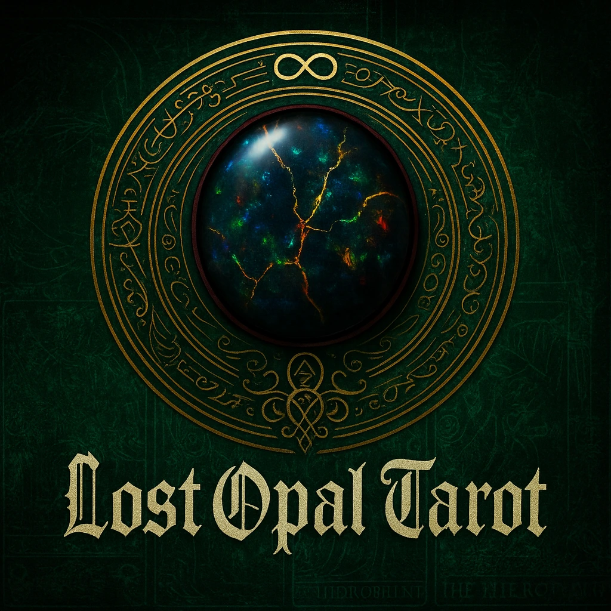

Future photograph
Crystal Work
Stones as
living allies.
I work especially with black opal—my heartstone—alongside quartz, obsidian, amethyst, citrine, tourmaline, and many others.

The heartstone
Why black opal belongs at the center.
Black opal is the image that gave Lost Opal its language: a dark ground that does not swallow the light, but makes every color within it easier to see.
That is how I approach stones here—as physical companions for attention, ritual, symbolism, memory, and reflection. The meaning is something I enter into relationship with, not a substitute for care, choice, or practical action.
The first collection
Six stones already at the table.
These placeholders establish the gallery and the first learning paths. Real photographs and deeper, sourced entries can replace them as the Crystal Work library grows.
Future photograph
Future photograph
Future photograph
Future photograph
Future photograph
The work
How stones enter the room.
They can support the atmosphere and focus of the work without taking over the conversation—or pretending to do what they cannot.
At the table
A stone can help mark an intention, hold attention, or give the reading a physical center.
In study and ritual
Color, texture, mineral, planet, element, and tradition create relationships worth studying carefully.
With discernment
Symbolic and spiritual use belongs beside sound judgment—not in place of medical care or practical responsibility.
What this page becomes
A growing stone library—not six unsupported claims.
- Real photographs from the working collection.
- Mineral facts separated from symbolic interpretation.
- Traditions and sources named when meanings differ.
- Care, handling, sourcing, and safety notes where relevant.
- Thoughtful links to related learning and future shop materials.
Continue from here